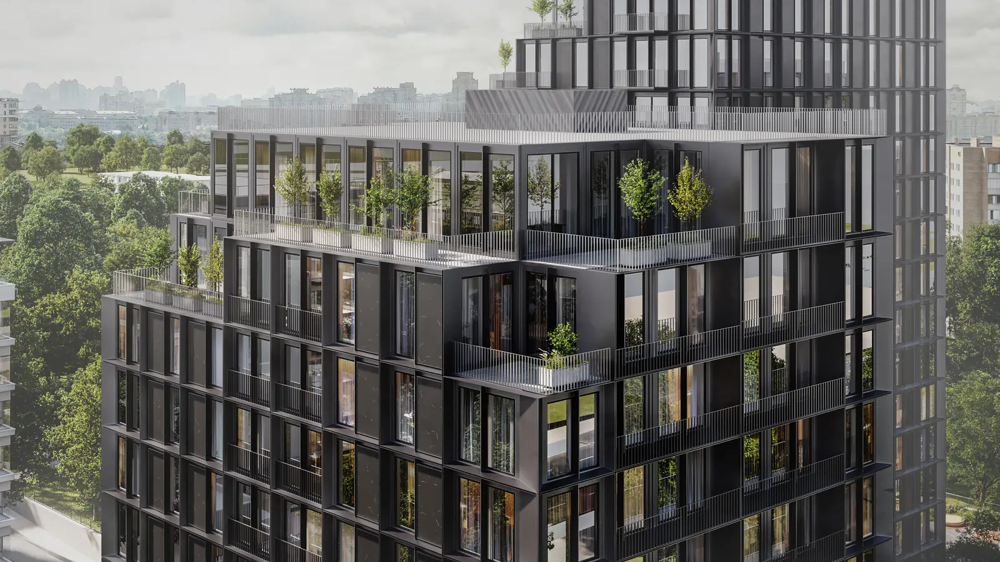
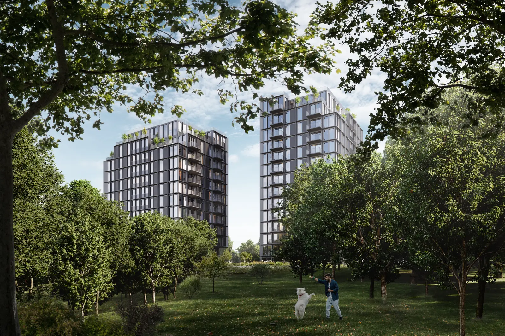
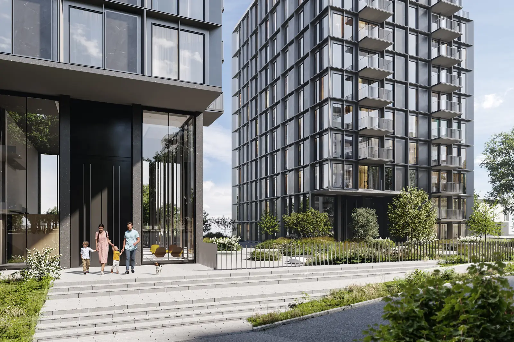
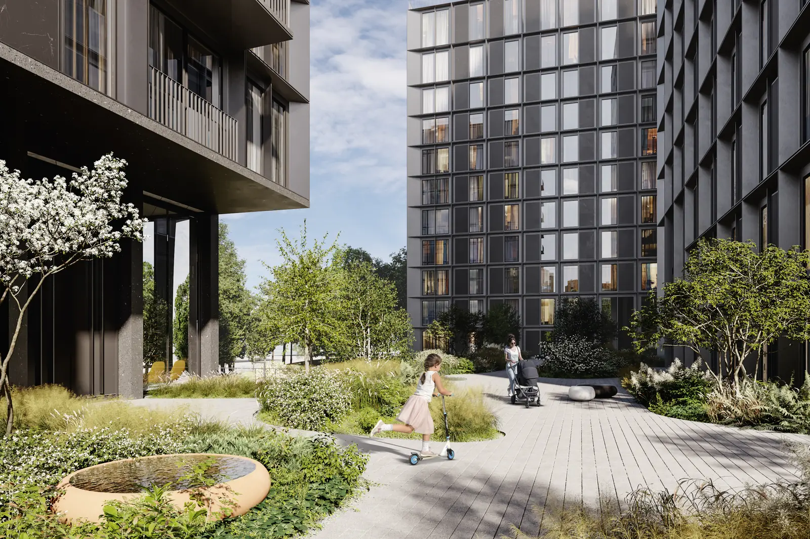
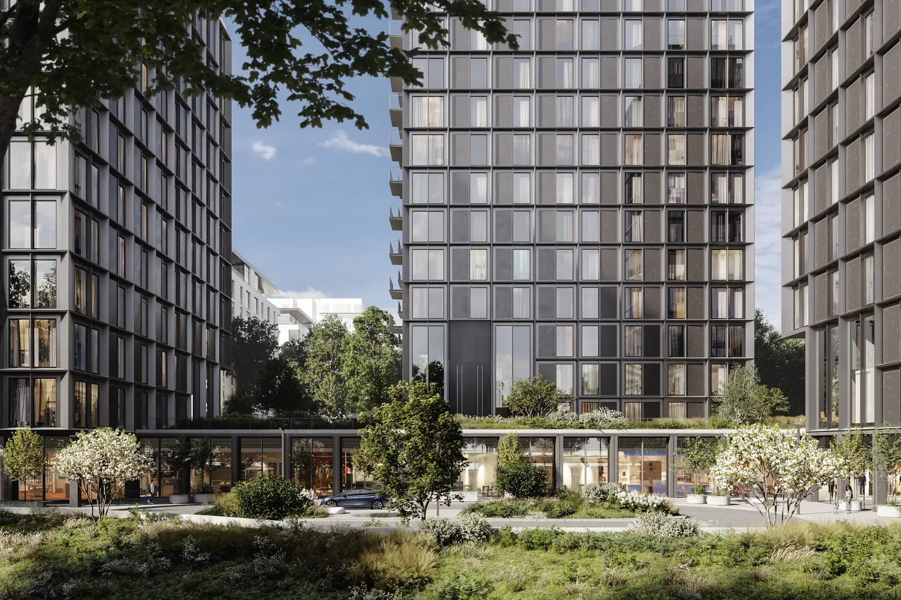
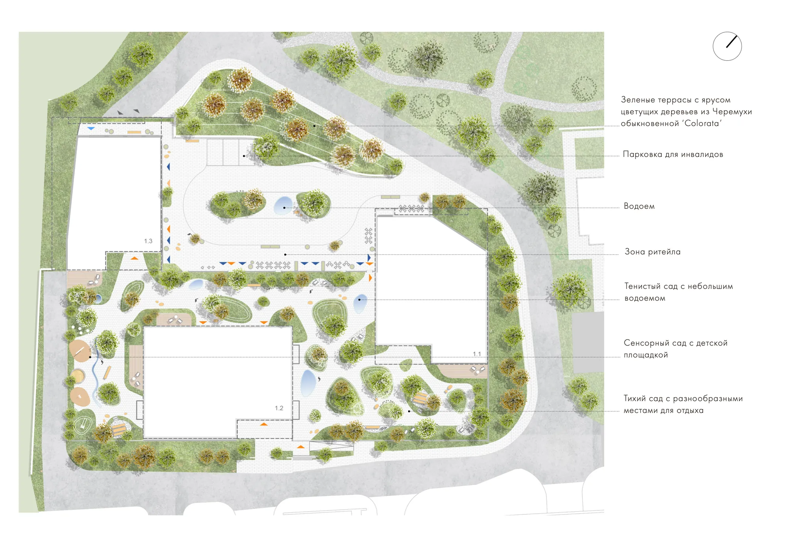

вишнёвый сад
Природные формы холмов, теневые и солнечные зоны, разнообразные места для отдыха, вода и места для спонтанной игры — двор жилого комплекса как цельный сад.
Зелёные холмы высотой 70–100 см несут ярус черёмухи и боярышника, вокруг них проходят дренажные каналы из морской гальки.
Площадка для малышей встроена в рельеф: горка на холме, пеньки и сиденья-гальки как элемент неочевидной игры.




чертежи и схемы
